¿Quien soy?
Soy Joaquín Fernández, tengo 19, estudio diseño multimedial y suelo pasar el tiempo libre jugando videojuegos. En este sitio voy a hablar principalmente de eso...
Volver arriba¿Que videojuegos son importantes para mi?
Actualmente los videojuegos a los que mas les eh dedicado tiempo son: Pokemon (Tanto saga principal, hackrooms, fangames y pokemon competitivo), minecraft (principalmente creativo) y BrawlStars. Aparte tambien de una combinacion de varios juegos indies que me eh encontrado en itch.io
Volver arriba¿Como los disfruto?
-POKÉMON:
Es el mas amplio, mas que nada pokémon es la saga que mas disfruto en general. Centrándome en los videojuegos, empece realmente sin acceso a los juegos de la saga principal, el primer juego que tuve de la franquicia fue magicarp jump para celulares (juegazo) pero un tiempo después encontré la forma de jugar al primer juego de la saga principal: pokémon cristal para GameBoy color, emulado obviamente; un primer contacto con la saga raro para mi generación, siendo parte de la segunda tanda de juegos de pokemon tiene MUCHAS menos facilidades para el jugador y mecanicas importantes para la saga, aun asi, Jhoto, se convirto en mi region favorita, pues me presento un mundo inmenso, lleno de caminos secundario y secretos que te premiaba por investigar a fondo cada zona y que aparte represento un desafio muy grande para el yo de esa epoca, quien se quedaba trabado cada dos por tres en gimnasios.
Ese fue mi primer contacto y uno de los que mas me marco, no solo para con la saga, sino para el gaming en general, dando un gran amor por los juegos de estrategia y por aquellos que premian la curiosidad...
Aparte de los juegos principales, otra de mis formas favoritas de disfrutar de esta saga es adentrandome en su comunidad, principalmente en fangames y hackrooms que nos dan a los fanaticos todo ese contenido que a veces nos hace falta por parte de ThePokemonCompany y GameFreak, hace poco termine el hackroom Pokemon Lazarus, una joya de juego de principio a fin, aparte me ecuentro jugando regularmente al "Qwilfight" , que es una reinvencion del juego de mesa batalla naval pero con pokemon... Definitivamente la comunidad de pokemon es de las mas impresionantes de todas, contantemente salen proyectos espectaculares como estos, otros grandes ejemplos son pokemon Gaia, Unbound y TeamRocker edition...
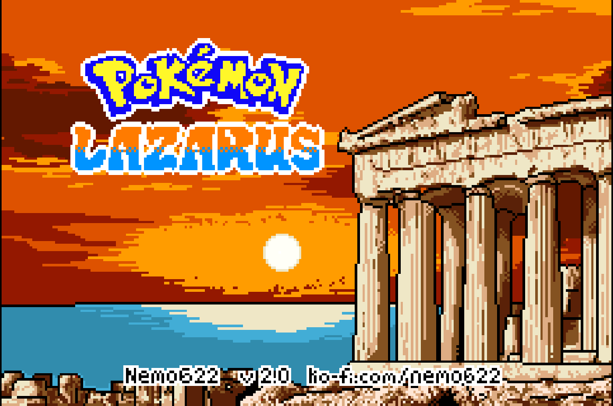
Finalmente, tambien me estuve adentrando a los combates PvP, aprovechando la pagina PokémonShowdown que te permite hacer un equipo en diferentes formatos de combate, ni bien no soy muy bueno haciendo equipos para el formato ofcial de los tornes (formato VGC) si eh intentando varias veces del competitvo, aunque siempre e tenido mas suerte en otros formatos.
Algunos de mis equipos favoritos:
-Equipo de espacio raro en Doubles National Dex:
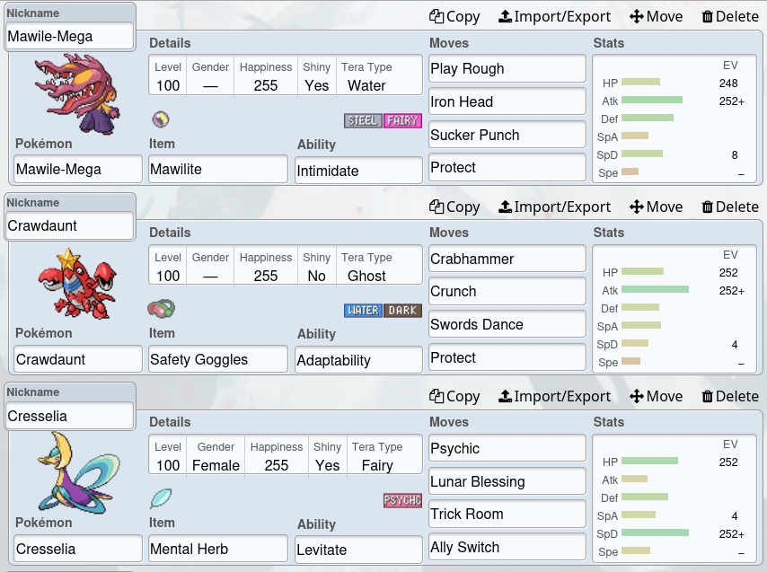
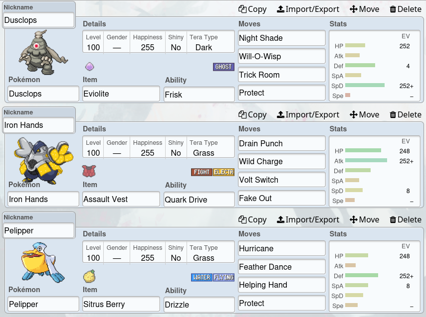
-Equipo de tipo bicho en Monotype:
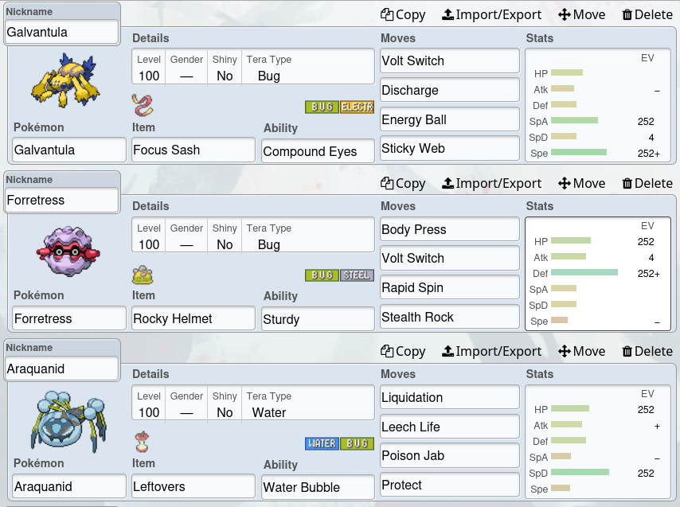
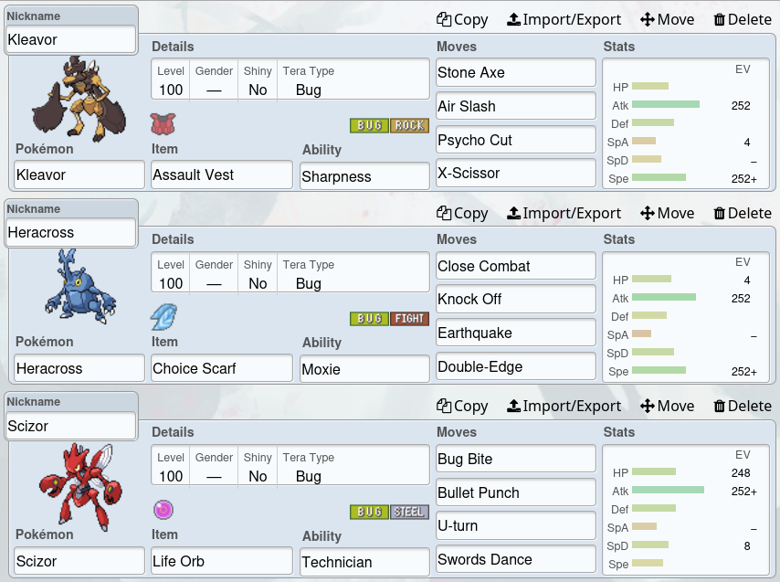
-Equipo de sol en doubles OU:
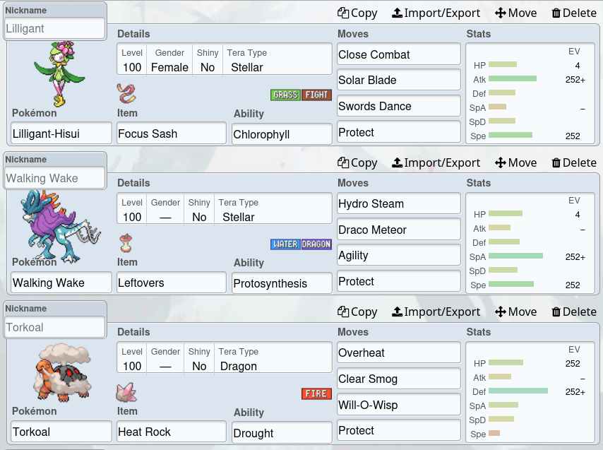
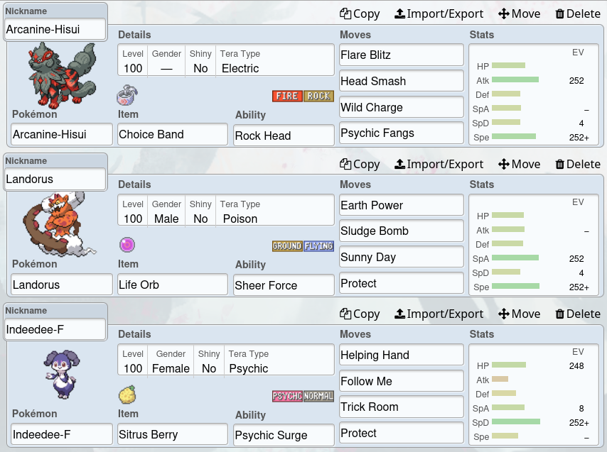
La profundidad de pokémon, con su cantidad prácticamente infinitas de combinaciones posibles, hace imposible que no se me haga llamativo. Personas como Wolfey (campeón mundial y jugador competitivo regular de pokémon), que consiguen exprimir el juego y a sus criaturas de forma experta para sacarles todo el potencial solo hacen que mi interés por este mundo crezca mas.
Entre la profundidad del mundo competitivo, las creaciones cada vez mas profesionales de la comunidad y el lazo que vas formando con estas criaturas a medida que vas peleando con ellas, Pokémon se volvio y se vuelve cada vez mas una parte de mi vida y siento que siempre va a estar ahí
Volver arriba-MINECRAFT:
Esta es mas corta, lo juro XD...
La segunda consola (y ultima) que tuve en mi vida fue una Play3 y el primer juego que jugue en ella fue el Minecraft, mi primer acercamiento fue... torpe, para que se den una idea: hice un hueco en el piso, tire una manzana y espere a que creciera un árbol, pero bueno, era chico. Con el tiempo, practica y aprovechando el internet en la casa de mis abuelos para ver youtube, fui aprendiendo como funcionaba el juego.
Siempre fui un jugador de creativo, eh hecho mundos survival muchas veces pero definitivamente el lado sandbox del juego es lo que siempre me atrapo mas, es mas, haciendo memoria creo que nunca me pase el juego legalmente xd y eso que es de los juegos que mas jugué en mi vida.
Actualmente, ya con Tlauncher en la computadora, para lo que mas entro es para construir cosas, adjunto pruebas:
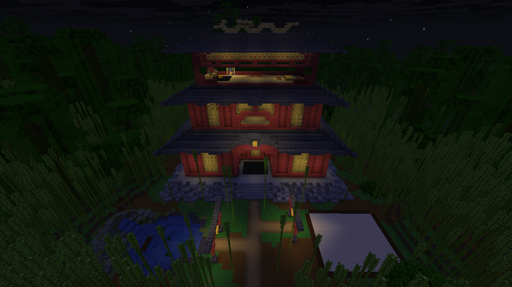
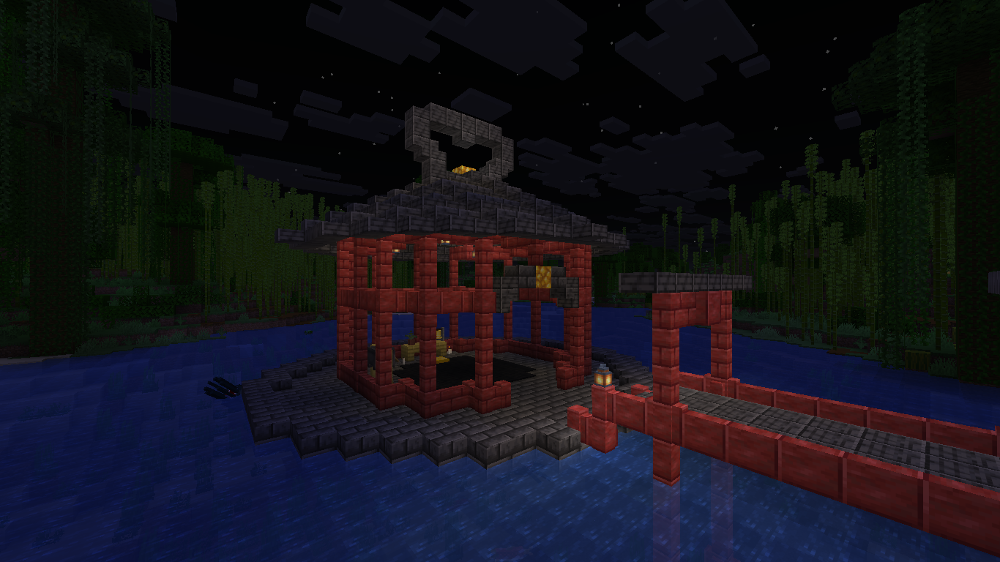
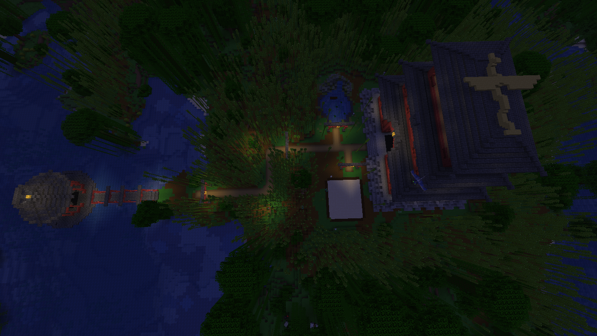
Para lo que suelo ver en redes, no es nada muy impresionante, pero voy mejorando.
Minecraft fue importante para mi porque me abrió el panorama de lo que se puede llegar a lograr con un videojuego, aparte siempre me a gustado crear !y minecraft se trata justamente de eso¡ No lo considero mi juego favorito pese a todo, pero lo considero un juego practicamente perfecto por su concepto y, pese a las quejas que hay sobre Mojang, bien ejecutado. Marco mi infancia, mi adolecancia y muy probablemente mi adultez.
Volver arriba-INDIES:
Juegos indies abundan y mas alla de los mas famosos, como HollowKnigth, stardewballey o fanf, hay una cantidad infinita de juegos indies que vale la pena probar, aunque sea solo para pasar un rato. Aca dejo algunas opciones que descubri y disfrute mientras exploraba Itch.io:
-Dexfusal:
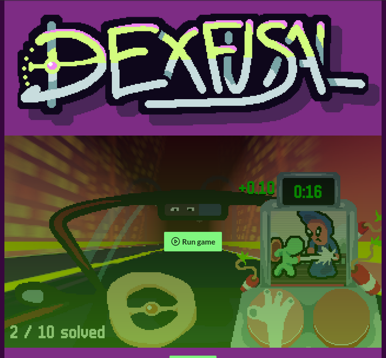
-How to make a cup of tae:
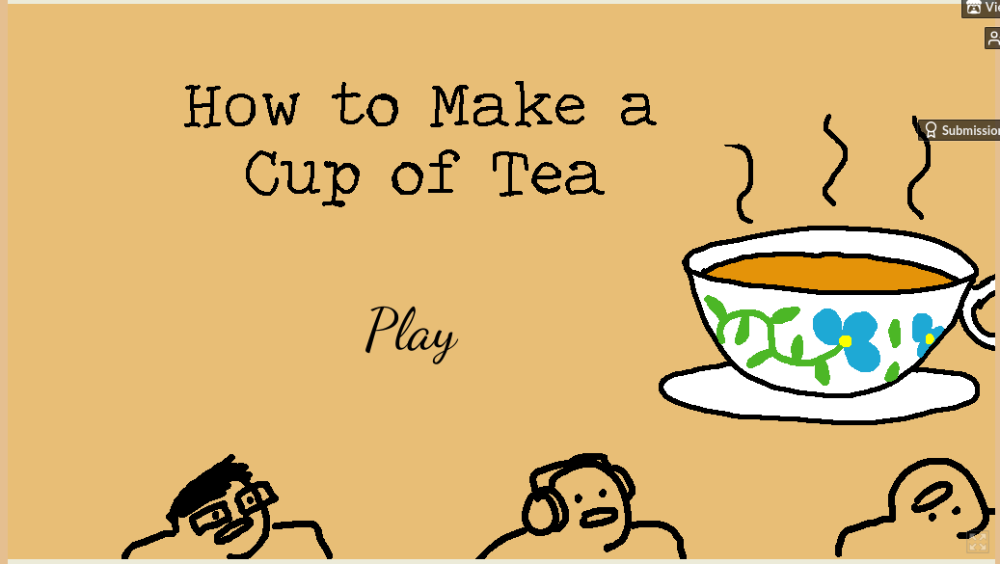
-Cobb can move:
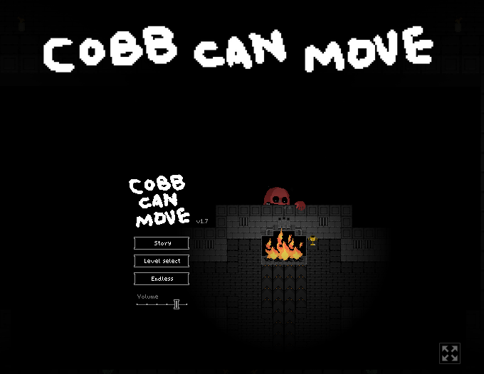
-Klifur:
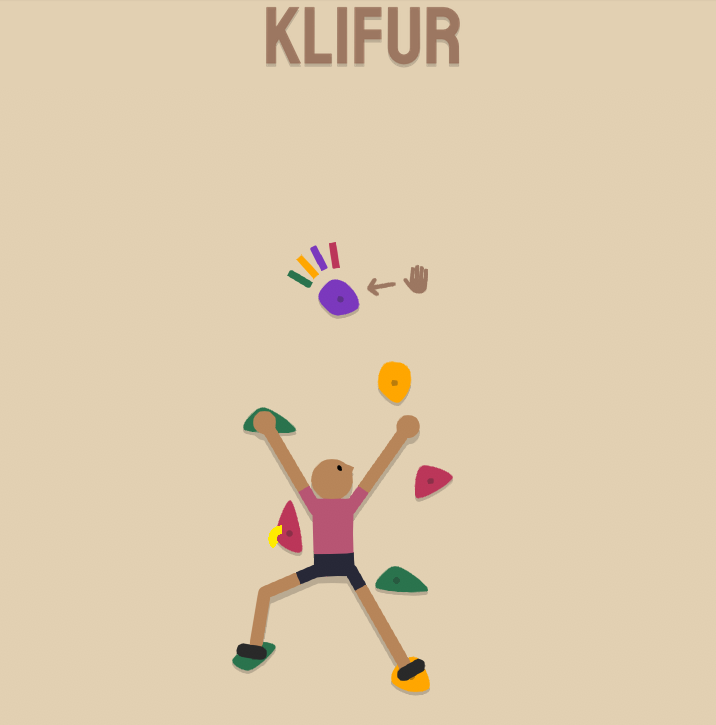